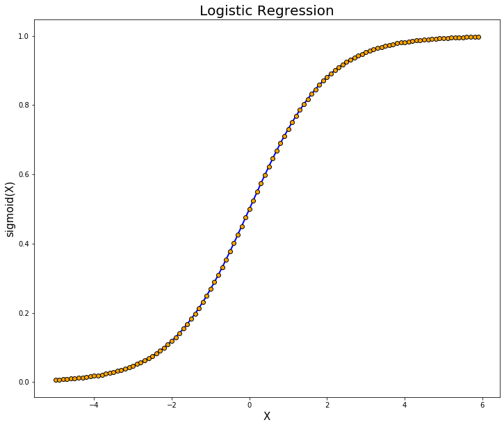
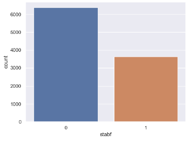
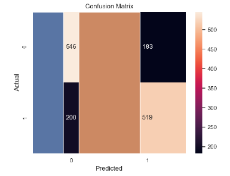

to determine an Electric Grid stability
The goal of this project is apply logistic regression to determine whether an electrical grid is stable or not. This technique yields a binary result, 0 or 1. One meaning the grid is stable and Zero means it's unstable. This variation of regression model was created to used in survivability analysis. However, we can use it to determine stability as well.
To build a good model, the explanatory variables that have the greatest effect on the predictions must be chosen. This was done by looking at the p-values for each explanatory variables. The most relevant ones were chosen for this model.
Initially, plotting the data-set, imbalance between the two classes were noticed. This was fixed using down-sampling. For numeric analysis, confusion matrix was created.The model predicted 0, when the actual value is 0, 546 times. The model predicted 0, when the actual value is 1, 200 times. The model predicted 1, when the actual value is 1, 519 times. The model predicted 1, when the actual value is 0, 183 times. The model has an accuracy of 73.55%.
Using evaluation metric such as McFadden's method, a pseudo-r-squared of 0.1971 was achieved. Via his method, 0.2 is considered as an excellent score. Therefore, the model came out to be quite good.
Two people including me worked in this project. Used python and matlab. Libraries such as sklearn, pandas, numpy, matplotlib etc. was used.